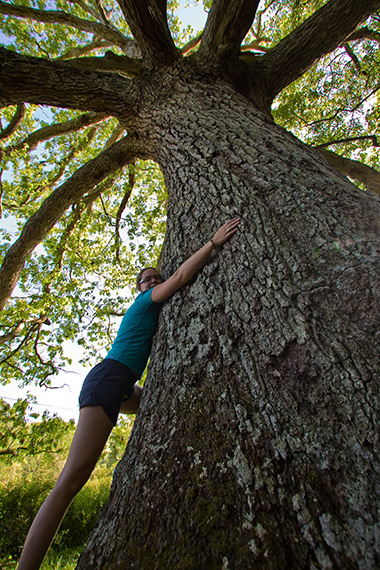

Welcome to the OCVT!
The Outdoor Club at Virginia Tech (OCVT) is a diverse group of outdoor enthusiasts comprised of undergraduate, and graduate students and other members of the Blacksburg community. The goal of the club is to get our members outside and active both physically and socially. OCVT strives to spread knowledge of the local area, to teach safe and responsible outdoor practices, to volunteer time to keep our section of the Appalachian Trail maintained and most importantly to have fun while doing it. If you're interested feel free to read more about us and if you like what you see join up!
News and Announcements
MEDIC SOLO Disaster + Wilderness First Aid Training
MEDIC SOLO is offering virtual / hybrid / in person classes this fall and upcoming spring for their disaster preparedness program. For more information check out their website: https://www.solowfa.com/online-course.htm?utm_source=MEDIC+SOLO&utm_campaign=c6f0817fcb-EMAIL_CAMPAIGN_2020_09_21_09...
Read More...
Slack Invite
Join our slack page!
https://join.slack.com/t/outdoorclubat-utz3688/shared_invite/zt-h0zo16e9-EfNbog_1ZQhdM1bwcbpnEg
Getting back to work (and play)
We are beginning to offer a few trips and AT trail work trips with COVID specific accommodations.
No carpooling with others that are not in your "family/living" unit.
Group sizes limited to 4.
No sharing of snacks, tools, water, etc.
Maintain social-distancing (6') and we...
Read More...
COVID-19 UPDATE
As the coronavirus outbreak continues and officials work to stop people from gathering in large groups, including in outdoor spaces like the Appalachian Trail, the George Washington and Jefferson National Forests are issuing new restrictions.
The national forests announced on Monday evening ...
Read More... Older news items -->
Upcoming Trips
Dragon's tooth afternoon-night hike
Monday, Nov 30, 2020Trip Type: Dayhike
Full Details